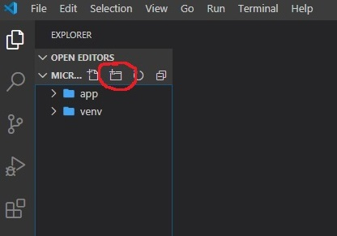
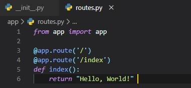
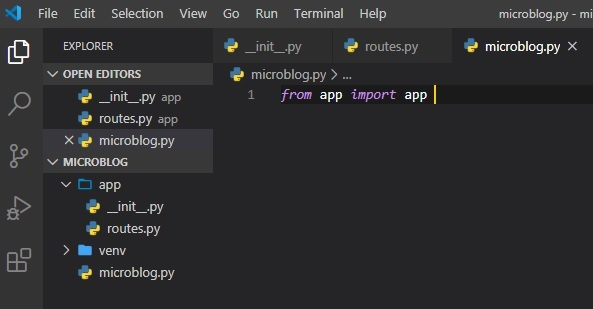
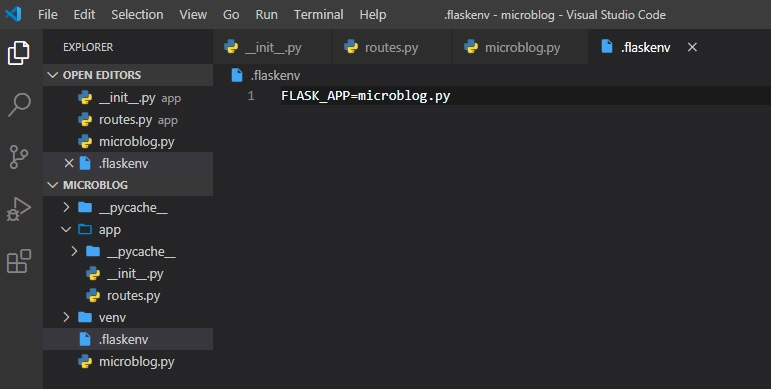

Write-Up
For my summative write-up for the year 2020, I'll be going over
the material in The Flask Mega-Tutorial(Chapters 1-8). To follow along and understand what's happening, a bit of previous
OOP(Object-Oriented Programming) knowledge is recommended, as well as, what I'd classify as an 'intermediate'
understanding of the Python and HTML5 programming languages. However, for things unique to building a dynamic website, you're
hopefully going to find everything you need right here in this write-up. Side note: pictures aren't always fully shown on small
windows or mobile screens, but text and such all works cross-platform.
Below are clickable links for you to jump straight to
whichever chapter you're on in reading this write-up:
Installing Python
Firstly, you need to ensure that Python is installed onto your machine.
This can be done by visiting the python.org website.
Make sure to have it be at least Python3.6 or later, since older versions
aren't supported by Flask. Also, make sure that you select "add to PATH" upon
installation. By installing Python, you also get pip, which will allow you to
install packages/libraries directly from whatever terminal window you're using.
You can also use your terminal window to check if python is installed by typing
in "python3", or "python" if that doesn't work. This'll display your current version
and enter you into the Python Interpreter, which will be used later for various
python commands, so remember how to access it.

Installing flask
Once Python is installed, along with pip, you can then use the command below to install packages(like Flask).

If you're having issues with running this command later on, check to see if you are on
the administrator's account, since it won't work on any other user's account.
In order to take care of issues such as having to maintain different versions of packages
for different applications, Python uses the concept of virtual environments.
It's essentially a copy of the python interpreter. If you install a package into this virtual
environment, it'll remain local and not affect the rest of
your system. Also, another huge benefit to having a virtual environment setup in your
folder("microblog"), is the portability of your project to other users/computers. Lets say,
if you wanted to put all this code inside of a GitHub repository, like I did when first
making this website with Hassan, you'll be able to clone the repository, along with the venv.
This means that you won't have to go through the process of installing every single package and
such on every single device, but instead, they're ready to go inside of the venv folder.
Yet another benefit to virtual environments, is that they are actually owned by the user that created
them. Which means, that if you faced the issue earlier of not being the administrator on
your computer, you can run commands in here freely.
The first step to this is making a directory to have this virtual environment in.

Then, you need to enter into the directory you've just made.

Now, you can make a new virtual environment, that'll be named "venv". The first word "venv"
is for the Python virtual environment package, while the second "venv" is for your
virtual environment's name, which you can change if you'd like.

Note that in some operating systems you may need to use "python" instead of "python3" in
the command above, since some installations use "python" for Python2.x releases and "python3" for the 3.x
releases, while others simply use "python" for the 3.x releases.
Once you have your virtual environment created, you need to tell your system that you wish to use it.
To activate your virtual environment you need to type this command on a UNIX(Mac or Linux) system:

If you are using the Microsoft Windows command prompt window(like I am), the activation command is slightly different:

Once in your virtual environment, you can then use the "pip install (package-name)" command from
earlier to install flask.

A "Hello, World" Flask Application
The tutorial I followed for this website made various Python and HTML5 files/folders by using
the terminal and making directories instead of just doing it the easy way. I found that a much
simpler method of doing this was by just doing it all in your IDE(Integrated Development
Environment), like Visual Studio Code. I'm assuming that anyone reading this uses this IDE,
considering it's the one we use at robotics and is among the world's most popular IDEs. If
you do choose to not use Visual Studio Code, just know that most of what I'm saying will apply
to any other IDE, or at least shouldn't be too difficult to figure out yourself. If you want to
follow along either: install an IDE such as VSC(Visual Studio Code Installation) or figure out how to make folders and files within the terminal.
So, let's get into setting up our first folder and Python file inside of it. Firstly,
you want to open a new window of Visual Studio Code, click "File" -> "Open Folder"

Then, navigate through to your folder called "microblog". If you aren't sure where this folder is,
you can do a search or look at the file path from when you were doing commands in the terminal, as
shown below.

Next, you just want to click "Select Folder". Once you have the folder open, you'll notice how the
"venv" folder has already been made inside of your "microblog" folder. It contains all the things
you've installed into your virtual environment thus far. Now, you want to make a new folder at the
same 'level' as this folder. You do this by clicking on the button shown below to make a new folder
directly inside the "microblog" one - make sure you haven't selected the "venv" folder and are
just in the "microblog" folder. You're going to name this new folder "app".

Inside of the new app folder, you're going to make a new file by clicking on this button, and name it
"__init__.py". This'll let Visual Studio Code know about which kind of file it is by its file extension.
This is ".py" in our case, which is short for Python. "__init__" signifies it as being the initialization file.

Now, we finally get to the fun part of making the website - coding it! Feel free to copy the code exactly to
follow along. Although, I would highly suggest typing it out yourself to get a feel for actually doing so,
rather than copy-pasting it.

The Python script above instantiates the application object from the Flask class. The __name__ variable used as
a parameter to the Flask class is a predefined variable in Python, which is set to the name of the module in which
it's used. Later on, Flask will use the location of this module passed here as a starting point when it
needs to load associated resources such as template files(HTML5 front-end files). We then import "routes" from the
folder we made earlier called "app". In case you were curious, the reason as to why we're importing routes at the bottom,
instead of at the top like usual, is because routes references the app variable created here in this file. You don't need
to worry about this too much for now, but just know that this is a little work-around for a common issue with Flask applications,
being that they mutually reference each other sometimes and can cause an error by doing so. However, as of now, the routes file
has not yet been created. So, let's do that!
Just like how you did it earlier, you're going to be making yet another python file inside of the "app" folder, name
it "routes.py". Once you've done this, type this code into that file.

This file will be used to make various 'routes' to the URLs for the application, or its different 'pages'/'views'.
The routes are the different URLs that the application implements. With the Flask web framework, handlers for the
application routes are written as Python functions, called view functions. These functions are mapped(like a pointer)
to one or more route URLs so that Flask knows what to execute under that URL.
This view function is very simple, all it does when a user accesses this URL(either '/' or '/index') is return "Hello, World!"
The two @app.route lines above the function are what's known as decorators. They're not part of the flask framework, rather
they're built into Python, meaning you might see them elsewhere in other projects of yours later on. They essentially act
like modifiers for the function under them. This decorator take the URL as an argument inside of the brackets and associates
it with the function. This means that when a user accesses either of the two URLs, the function below them will be executed.
Most of the time, though, these functions only require one of these decorators in order to get called. It's just that whether
the user is on the default(blank or '/') URL, or on the '/index' URL, we want it to run that same function.
To finally get the application up and running on your browser, there is one more Python script you need to make. It should be
made a top 'level' of all your files inside of microblog. Meaning, it is on the same 'level' as "app" or "venv". You do this
by clicking on the new file button after having clicked on the microblog folder so that you make a file directly inside of
this folder.

This one line of code just imports the application instance from the app package. I know it can be a little confusing with having them
as the same name, but to re-clarify: the first "app" is the variable in which we instantiated the app class object inside of, and the
second "app" is the package class it's getting instantiated from in the app.py file. Feel free to change the variable name or importing
the app package as a different name by doing the following: "import app as (new name for it)" as opposed to simply doing "import app"
at the top of the "__init__.py" file.
The last step before running your application on a localhost is setting up the FLASK_APP environment variable. On a windows machine,
you need to do this following command:

On other machines, you need to type "export" instead of "set" like so:

Get used to running this command in your virtual environment. You're going to have to do it every single time you re-launch your
terminal to run this application. Also, if you're running multiple flask applications, you're going to have to make sure you're
in the right flask_app environment. This has caused a lot of frustration in the past for me, when I didn't realize I had actually
just been in the wrong flask_app environment. Save yourself the headache and always remember to do this when opening up the terminal
for running your flask application.
Finally, the last thing left to do is run your flask application.

To access the application that's just been run on your computer, you can type "localhost:5000" into your browser's address bar.
If you remember from earlier, though, we set up 2 different URL decorators to access this same page. This was the first one('/'),
alternatively, you can also type "localhost:5000/index". However, these are the only two URLs you can type in at the moment.
In the terminal, once you're done, you can press Ctrl-C to stop the application from running.
Before we leave off this chapter, there's one more thing to mention. If you'll find it tedious to reset the flask_app environment
variable every single time you open up the terminal window, you can setup a file at the top 'level' of your "microblog" folder
that'll be called ".flaskenv".

Then, after doing this you need to type in this command into the terminal:

Now, to run your flask application again in the future, all you need to do is go into the terminal and follow these steps:
- "cd (directory)" into the right directory, which should be "microblog" at the end of the file path you're in
- activate your virtual environment
- if you didn't make the .flaskenv file and haven't automatically set your flask environment varibale, do so
by typing in the proper command(either "set" or "export" FLASK_APP=microblog.py)
- type "flask run" into your terminal
- visit the "localhost:5000" address in your browser
- press Ctrl-C to stop deployment
Introduction To Templates
Since, we don't yet have users on our webpage, we don't have to worry about that yet, instead, we can make mock ones.
We're going to be implementing these as Python dictionaries, linking a user's username to their username. In our case,
we'll name our first mock user "Bogar". Having mock objects or components to your website is a really useful thing in
web development. It allows you to concentrate on one part of the application without having to worry about the other
parts of the system that don't exist yet, while still being able to test it out like it were implemented already.
Right now, we want to create our homepage that'll display a custom message based on our user's username being "Bogar".
The first step to that is to set a mock username to the variable "user".

Now, though, we need to return something from this view function and display it on the website. We'll do this by having
an HTML5 file. To make this file, we first need to make a new folder called "templates" inside the "app" folder. Then,
inside of the new "templates" folder, make a new file called "index.html". This is the standard name among various HTML
applications to indicate the main page of a website.

Now, we need to give it a title to have displayed in the tab bar and our message inside of the body.

This is a pretty basic HTML page, other than the {{...}} symbols. These represent placeholders for dynamic content, like variables.
Now, we need to head back to the routes.py file and return something in the index view function. For this, we'll be importing
a function from flask called "render_template". This function takes a template filename('index.html') and a variable list of
template arguments in our placeholders and returns the template, now with actual values instead of placeholders for those values.

You can now, of course, try this in your browser once again, to see how the content got modified.
User Posts
Once again, we're going to make use of mock users and also some new mock posts to display users and their posts on the home page.

I know that this can seem pretty complex, but I'll try explaining these different data types and colour-coding parts of it in the image.
To represent user posts we'll be using a list. Inside this list, there'll be two dictionaries with "author" and "body" fields.
The first post dictionary's first item's "author" field has a dictionary as its value, and in this dictionary, lies the key('username') along
with the value('Daniel').

Now, we have to update the index template. Since, the list of posts can have any number of elements,
it's up to the view function to decide how many posts are going to be presented in the page. The template cannot
make any assumptions about how many posts there are, so it needs to be prepared to render as many posts as the view sends.
We can do this by making a simple for loop that iterates through the posts and, for each post, has the post author's username
and its post body to put in a paragraph tag. The little conditional I put in the head tag is pretty simple to understand. It
just evaluates whether there's already a title for this page, and either uses it in the title before "- Microblog" or generates
the generic title of "Welcome to Microblog".

Template Inheritance
Just like this website you're currently on, many have navigation bars at the top of their pages, with a few links. The links
on this website are: "HOME", "WRITE-UP", and "ABOUT RAVENSCOUT". This isn't very hard to do normally by just copy-pasting the
same links into every single file, but there's a simpler way to do this in HTML5. For good practice, we want to avoid repetition
at all costs in programming if it's more efficient.
Jinga2, which is included in Flask, has a template inheritance feature that helps us with avoiding repetition in our HTML files.
It essentially allowed you to make one 'base' file, which we'll call "base.html" that'll have all parts of the page layout that
are common to all templates, from which other templates are derived from.
Let's go ahead and make this file in the templates folder and call it "base.html". It'll include a simple navigation bar and the
title conditional logic implemented earlier into the index.html file.

In this main template, the block control statement(anything inside of {...}) is there to define the place where the derived
templates can insert themselves into this one. Blocks are given a unique name, which derived templates can reference when they
provide their proper content. Now, we can adapt the index.html file to now inherit from this base template we've just made.

The base.html template file will now be taking care of all the general page structure parts, so all that's required in the
index.html file is its proper content for that page. The "extends" control statement establishes the inheritance link between the
two template files. In more complicated terms, this means that Jinja2 know that when it is asked to render index.html it needs to
embed it inside base.html. Two two templates have matching block statements named "content", and this is how Jinja2 knows how to
combine the two templates into one. Now, for any additional pages, this base.html template has you covered and will just need to be
extended once again, in the same manner. This is how we can achieve the same look and feel of two web sub-pages without the need for duplication.
Introduction To Flask-WTF
We are now going to be addressing our little issue of only having mock users. This will be done through the use
of web forms by accepting input to store actual users. Web forms are key in most web applications, being one
of the most basic building blocks to making a great web application. We'll be using forms to allow users to submit
posts, and also for logging in to the application.
This is where the Flask-WTF extension will come in handy. There will also be many more flask extensions to come
in the future. Once again, you can install this into your virtual environment by using the command seen below, like you've done previously.

Configuration
The application we've made so far is very simple, and for that reason we don't need to worry about its
configuration. However, in many cases with web apps, you might find yourself wanting to configure some variables
that'll get passed to the Flask web framework to personalize your website.
There's several formats for the application to specify configuration options. The format we're going to be using
is to store configuration variables in a class. This file named "config.py" will be made directly inside the main
"microblog" folder, on the same level as "microblog.py"

If we eventually get to need more than one configuration set, then there is an option to make subclasses of this
configuration class.
The SECRET_KEY configuration variable is used as a value for a cryptographic key. Flask uses this to prevent
a Cross-Site Request Forgery attack or CSRF. The value of this secret key is set as an expression with two
terms, joined by the or operator. The first term looks for the value of an environment variable, also called
SECRET_KEY. The second term, is just a hardcoded string. This is a pttern that you'll see repeated often for
config vaiables.
The idea's that a value sourced from an environment variable is preferred, but if the environment doesn't
define the variable, then the hardcoded string is used instead. When you're developing this web application,
the security requirements are low, so you can just ignore this and let the hardcoded string be used. However,
when it's deployed onto a production server, you should set a unique and difficult to guess value as the
environment variable.
Now that the config file's setup, we need to let Flask know about it. So, we need to go back to the Flask application
instance in the __init__.py file. To do this, we need to call the method known as "from_object" and have "Config"
as a parameter.

In case you're confused about why it seems as though I'm importing something from itself, seeing as "flask" and "Flask" or "config"
and "Config" seem like the same things, just know that I'm referring to the uppercase ones as their respective classes, whereas
"flask" and "config" are modules(like the file "config.py").
User Login Form
The Flask-WTF extension uses Python classes to represent web forms. A form class just defines the fields of the form as class
variables. To implement this new feature, we're going to be creating a new file called "forms.py" inside of the "app" folder.
This user login form will include: username, password, a "remember" me check box, and a submit button.

The four classes that represent the field types that we're using for this form are imported directly from the WTForms package,
since the Flask-WTF extension doesn't provide customized versions. For each field, an object is created as a class variable in
the LoginForm class. Each field's given a little description or label as a first argument.
The optional validators argument that you see in some of the fields is used to attach validation behaviors to fields. The
DataRequired validator simply checks that the field isn't submitted emtpy. There's many more validators available, some of
which we're going to use in future forms.
Form Templates
Now, that we have a functional back-end for the user login form, our next step is to add the form to an HTML template so that
it can be rendered on a web page. For this, we're going to make a new HTML5 file inside the "templates" folder called "login.html".

For this template, we're using the "base.html" template once again. This templates expects a form object isntantiates from the
LoginForm class to be given as an argument, which you can see referenced as "form". This argument will be sent by the login view
function, which isn't written yet in the "routes.py" file.
The HTML "form" element in <> is used as a container for the web form content. The "action" attribute of the form is used to tell
the browser the URL that should be used when submitting the information the user entered in the fomr. When the action is set to an
empty string, the form is submitted to the URL that is currently in the address bar, which is the URL that rendered this form on
the page. The "method" attribute specifies the HTTP request method that should be used when submitting the form to the server. The
default is to send it with a GET request, but in almost all cases, using a POST request makes for a better user experience because
requests of this type can submit the form data in the body of the request, while GET requests add the form fields to the URL, cluttering
the browser address bar.
The "form.hidden_tag()" template argument generates a hidden field that includes a token that's used to protect the form against CSRF
attacks. All you need to do to have the form protected is include this hidden field and have the SECRET_KEY variable defined in the
Flask configuration.
The form object calls the fields as methods, and they're already programmed to know how to render themselves as HTML code. {{ form.field_name.label }}
is used to include the field label, and {{ form.field_name() }} is used to get the field. For fields that require additional HTML
attributes, those can be passed as arguments. The username and password fields in this template take the "size" as an argument that'll
be added to the "input" HTML element as an attribute. This is how you can also attach CSS classes or IDs to form fields.
Form Views
Finally, we have to code a new view function in the application that renders the template made. This is done in the "routes.py" file.
We're going to make another view function right below the previous one and import the LoginForm class from the "forms" file inside of the "app"
folder.

Here, we've instantiated an object of the LoginForm class form the "forms.py" file, and sent it to the template. The "form=form" syntax
means that it's passing the "form" object created in the line above to the template named "form". Now, we just need to add another
hyperlink on the top of every file to the new login page. All we need to do for this is to add it to the base.html file, for all
other template to inherit form, making it so all templates have this new hyperlink.

Receiving Form Data
As of right now, if you try hitting the submit button, the browser's going to display a "Method Not Allowed" error. This is because
the inside the login view function, the submit button has no logic in place yet to process data submitted by the user yet. So, we're
now going to be accepting and validating the data submitted by the user in this updated view function. Also, there are new modules to
import at the top of the file.

The first new thing in this version, though, is the "methods" argument in the route decorator. This tells Flask that this view
function accepts both GET and POST requests, overriding the default, which is to accept only GET requests. The HTTP states that
GET requests are those that return information to the client(the web browser). All the requests in the application so far are of
this type. POST requests are typically used when the browser submits form data to the server. Now that we've enabled "POST" requests,
the "Method Not Allowed" error should be all fixed.
The "flask()" function, imported from Flask, is a useful way to show a message to the user. This is only a temporary solution for our
application, though, since we don't have a system setup to actually log users in yet.
Although, the "flash" messages don't automatically appear in the browser, so we need to set up a way for these
messages to display in the "base.html" file itself.

Here, similarly to how you'd do it in Python, we use a "with" construct to assign the result of calling the "get_flashed_messages"
function to a messages variable. The conditional after this checks if "messages" has content, and if it does, displays them in an
unordered list.
Improving Field Validation
We're now going to tell the user which fields they're incorrectly supplied data into in the login form, using style in the "login.html" page.

Now, if you try submitting the form with an empty username or password, this is what'll occur on your browser tab:

Generating Links
Before leaving off this chapter, I'd like to talk about making links better in your application. Let's say, for instance, you
decide to reorganize your link names, or just don't want to bother with having to remember them all by name. Well, you can
simply use the "url_for()" method from Flask that will provide the link for certain pages. You'll see this in the following two
files below:
- base.html

- routes.py

Databases in Flask
Flask doesn't actually support databases natively. This means you'll have the freedom to choose the database that best fits.
There are two groups of databases, those that follow the relational model, and those that don't. Ones that are relational
implement the popular relational query language SQL, and those that don't are called NoSQL. Relational databases are a better
match for application that have structured data such as lists of users, blog posts, etc. while NoSQL databases are better for
applications with less defined structure. We're going with a relational one.
An extenstion we'll need to install is called "Flask-SQLAlchemy", which provides a Flask-friendly wrapper to the popular SQLAlchemy
package, which is an Object Relational Mapper or ORM. ORMs allow applications to manage a database using high-level entities such
as: class, objects, and methods, instead of tables and SQL. ORMs translate high-level operations into database commands.
To install this package into your virtual environment, execute this command in your terminal window:

Database Migrations
Database migrations address the issue of trying to make updates to an existing database as the application needs to change. This is
often difficult, seeing as relational databases are centered around structured data, so when the structure itself changes, the data
that's already in the database needs to be migrate to the modified structure.
So, the next extension we'll need to help with that is Flask-Migrate, created by Miguel Grinberg, the guy who wrote the blog I'm
basing this write-up on. To install it, type in this command:

Flask-SQLAlchemy Configuration
During development(as opposed to production), we're going to use a SQLite database. These are convenient for developing small
applications. We now have two new configuration items to add to the config file:

This new extension takes the location of the application's database from the "SQLALCHEMY_DATABASE_URI" config variable. Just like
we saw in Chapter 3, it's a good practice to set configuration from environment variables, and provide a
fallback value as the second parameter in case the environment doesn't define the variable. We're actually configuring a database
named app.db located at the top level of the application, which is stored in the basedir variable. This file will be automatically made
for us later, once we create the database.
The "SQLALCHEMY_TRACK_MODIFICATIONS" configuration option is set to False to disable a feature of Flask-SQLAlchemy that's not needed.
The database is going to be represented in the application by the database instance. The database migration engine will also have an
instance. These are objects that need to be created after the application, in the "__init__.py" file.

These are all the changes we've made to the init script:
- Imported a couple more modules at the top of the file
- We've added a db object that represents the database
- We've added another object that represents the migration engine
- Imported a new module called "models" at the bottom of the file, that will define the structure of the database
Database Models
The data that'll be stored in the database will be represented by a collection of classes, usually called database models.
Here I've made a model that represents users in a table. I did this using the
WWW SQL Designer Tool. It includes the fields, field datatypes, and field sizes.

The id field is typical to all models, and is used as the primary key. Each user in the database will be assigned a unique id value,
stored in this data field. Primary keys are, in most cases, automatically assigned by the database, so we just need to provide the
field to house them in.
The other three fields for: username, email, and password_hash are defined as strings(or "VARCHAR" in database lingo), and their
maximum lengths are specified so that the database can optimize its memory usage(which is important to do in computer science).
While the "username" and "email" fields are self-explanatory, the "password_hash" one has a little more to it. It is used for security
reasons so that passwords get 'hashed' by the database they're stored in, as to not be vulnerable to an attack. Although, this'll be done
in Chapter 5.
Now, let's go ahead and make a new file under the "app" folder and call it "models.py".

The "User" class created above inherits from "db.Model", which comes from Flask_SQLAlchemy and is its base class. This class defines
several attributes. Fields are created as instances of the "db.Column" class, which takes the field type as an argument, plus other
optional arguments, for example, allow us to indicate which fields are unique and indexes, which is important so that database searches
are efficient.
The "__repr__" method tells Python how to print objects of this class, which is going to be useful for debugging.
Creating The Migration Repository
The model class created defines the initial database structure for this application, but as the application continues to grow, there's
going to be a need to change that structure, whether that's adding, modifying, or removing items. Alembic(the migration framework used by
Flask-Migrate), maintains a migration repository, which is a directory in which it stores its migration scripts. Each time a change is
made to the database structure, a migration script is added to the repository with the details of the change.
The "flask db" sub-command to Flask's commands, added by Flask-Migrate manages everything related to database migrations. So, lets' create
the migration repository for microblog by running this command:

After running this command, you will find a new migrations directory, with a few files and a versions sub-directory inside.
The First Database Migration
This first migration will include the users table that maps the "User" database model. How Alembic normally creates a database migration
is automatically. To generate a migration automatically, Alembic compares the database structure as defined by the database models,
against the actual database structure currently used in the database. It then populates the migration script with the changes necessary
to make the database schema match the application models. In this case, since there is no previous database, the automatic migration will
add the entire "User" model to the migration script. The "flask db migrate" sub-command generates these automatic migrations:

The -m "(...)" part is optional, but it adds a short descriptive text to whatever migration you're currently implementing. The output of the
command gives you an idea of what Alembic included in the migration. The first two lines are informational and can usually be ignored. It
then says that it found a user table and two indexes. Then it tells you where it wrote the migration script. The 976200887022 code is an
automatically generated unique code I got for the migration.
This migration script has two functions "upgrade()" and "downgrade()" to apply or remove migrations. This command must be used after migrating
a new script to the database:

Database Relationships
Relational databases are good at storing relations between data items, hence their name. Consider the case of a user writing a blog post.
The user will have a record in the "users" table, and the post will have a record in the "posts" table. The most efficient way to record
who wrote a given post is to link the two related records.
Once a link between a user and a post is established, the database can answer queries about this link, like which user wrote a
certain blog post. This would actually be a pretty easy one, but one where you try finding the reverse would be complex. If you
have a user, you may want to know all the posts that this user has written. Flask-SQLAlchemy will help with both types of queries.
Now, I've expanded the database diagram to show the link between a user's id field and a post's user_id field. Sounds confusing, but
that's because it is. Later on, in Chapter 8, it'll get even harder when we introduce followers. However, this
stuff about database relationships is very good to know, considering it's taught in university computer science classes. For right now,
though, I hope you can follow, since I don't think it's too complex just yet.

The "posts" table will have the required "id", the "body" of the post and a "timestamp". In addition, though, is a "user_id" field, which
links the post to its author. The way to link a blog post to the user that authored it is to add a reference to the user's "id", and
that's exactly what the "user_id" field's for. The "user_id" field is called a foreign key. The database diagram above shows foreign
keys as a link between the field and the "id" field of the table it refers to. This kind of relationship is known as a "one-to-many",
because 'one' user writes 'many' posts.
Seeing as we now have another database table, we need to add a new corresponding class to the "models.py" file for the posts.

The new "Post" class will represent blog posts written by users. The "timestamp" field is going to be indexed, which is useful if
you want to retrieve posts in chronological order. We're also added a "default" argument, and passed the "datetime.utcnow" function.
When you pass a function as a default, SQLAlchemy will set the field to the value of calling that function. This is done by not including
the (), to signal that we don't want the value from calling that function, rather the function itself to be passed. In general, we want
to be working with UTC dates and times in a server application. This ensures that you're following the standard regardless of where
the users are located. These timestamps will be converted to the user's local time when they're displayed.
The "user_id" field was initialized as a foreign key to "user.id", which means that it references an "id" value from the users table.
In this reference the "user" part is the name of the database table for the model.
The "User" class now also has a new "posts" field, that is initialized with "db.relationship". This is not an actual
database field, but a high-level view of the relationship between users and posts, and for that reason it isn't in the
database diagram. For a "one-to-many" relationship, a "db.relationship" is normally defined on the "one" side, and is
used as a convenient way to get access to the "many".
The "backref" argument defines the name of a field that will be added to the objects of the "many" class that points back at the
"one" object. This will add a "post.author" expression that will return the user given a post. The "lazy" argument defines
how the database query for the relationship will be issued, which will be discussed later.
With a new update to the application models, a new update to the database migration needs to be made.

Now, for the upgrade command to finish it off:

Testing Time
After suffering all this time trying to get the database setup, it's time to see how it all works. We could do this in the Python
interpreter, but the problem with that is: we would have to import our libraries before testing inside the interpreter. A fix to
this is something the "flask shell". It is an exact copy of the Python interpreter, only it imports things from the "microblog.py"
app for you by making a function for it in that file.

Now, with these configured symbols to pre-import before heading into the shell, we don't have to worry about doing it ourselves.
Also, with the shell, comes the application instance pre-imported, which means that anything in the "app.db" file for our database.
The first step is getting into the shell by running the flask command.

Now that we're in, it should look exactly like the Python intrepreter. Let's start testing by creating a new user.

Changes to a database are done in the context of a session, which can be accesses as "db.session". Multiple changes can be
accumulated in a session and once all the changes have been registered you can issue a single "db.session.commit()" command. If
at any time while working on a session there's an error, a call to "db.session.rollback()" will abort the sesison and remove any
changes stored in said session.
With all that said, let's add another user.

Now that we have 2 users in our database, we can ask a query that returns all the users.

All database models have a "query" attribute that's the entry point to run database queries. The most basic query is
that one that returns all elements of that class. Also, since we indexed the "username" field, the "id" fields were automatically
set to 1 and 2 when they were added.
However, instead of doing a query to retrieve all users in a database, you can also locate one using the "id" of that user.

Now, let's add a mock blog post.

Since, we set a default value for the "timestamp" class attribute, we don't need to set it. As for the "user_id" field, we have a
"db.relationship" setup between the "User" class and the post, because the class adds a "posts" attribute to users, and also an
author attribute to posts. We went about assigning an turho to this post using the "author" virtual field instead of having to deal
with user IDs, which we don't have setup yet.
Now, to end this chapter off, we need to clean the shell so that there's no existing users and posts in our database for chapters to come.

Password Hashing
Time to address the "password_hash" field of the user model, that's gone unused thus far. The purpose of this field is to contain
a hash of the user password, which will be used to verify the password entered by the user during login. Although, password hashing
is pretty complicated and advanced, there's several libraries to help us with that.
Werkzeug, is a package we're going to implement to set and check a password. This'll be done in the "models.py" file under two functions
inside of the User class.

These two methods are pretty self explanatory by reading the function names inside of them. Just don't forget to import the two packages from
werkzeyg.security.
Introduction to Flask-Login
This popular Flask extension manages the user's logged-in state. This also provides the "remember me" functionality that allows users
to remain logged in even after closing the browser window. The first step to all of this though, is to - you guessed it, execute the install
command in the terminal for the extension.

As with other extensions, Flask-Login needs to be created and initialized right after the application instance in "__init__.py". This is how:

Setting Up The User Model
The Flask-Login extension works in tandam with the application's user model, and expects certain properties and methods to be
implemented in it. The four required items are listed below:
- "is_authenticated": a property that's True if the user has valid credentials or False otherwise
- "is_activate": a property that's True if the user's account is activate or False otherwise
- "is_anonymous": a property that's False for regular users, and True for a sepcial, anonymous user
- "get_id": a method that returns a unique identifier for the user as a string
These four items are simple to implement, but since since they're fairly generic, Flask-Login provides a class called "UserMixin". It's first
imported from flask-login, then added as a parameter to the "User" class.

User Loader Function
The way Flask-Login keeps track of the logged in user is by storing its unique identifier in Flask's "user" session, a storage space assigned
to each user who connects to the application. Since, Flask-Login knows nothing about databases, we need to configure a user loader function
for it to load a user given the ID. This function can be added in the "models.py" file.

The "@login.user_loader" decorator on top of the function is what registers the user loader with Flask-Login. The "id" that Flask-Login passes
to the function as an argument is going to be a string, so databases that user numeric IDs need to convert the string to integer as you can see above.
Logging Users In
We are finally going to change the fake login that just issued a "flask()" message in the login view function.

The first two lines are a solution to a weird situation. This would be if a user tried clicking on the login button while already being
logged into your application. So, this condition uses the "current_user" variable from Flask-Login to check if they're already
"authenticated" and redirects them to the "index" page if True.
In place of the "flash()" call that we used earlier, now we can actually log the user in. The first step to load the user from the database.
The username came with the form submission, so we can query the database with that to find the user. For this purpose we're using the
"filter_by()" method of the SQLAlchemy query object. The result of this method is a query that only includes the objects that have the
matching username. Since we know there is only going to be one or zero results, the query is completed by calling the "first()" command,
which'll return the user object if it exists, or None if it doesn't.
If the username match was successful, we can then check if the password that also came with the form is valid. This is done by calling the
"check_password" method defined above. This will take the password hash stored with the user and determine if the password entered in the
form matches the hash or not. So now we have two possible error conditions:
- The username can be invalid
- The password can be incorrect for the user
Either way, a message is flashed, and the user gets redirected back to the login prompt so that the user can try logging in again.
If both fields are correct, then we can call the "login_user()" function, which comes from Flask-Login. Finally, the user's reidrected to
the "index" page of the web application.
Logging Users Out
Flask has the "logout_user()" function already built in for us. All we have to do is add another view function to the "routes.py" file
and another hyperlink in the "base.html" file.

Now, all we have to do is add some pretty simple logic to our hyperlinks in the "base.html" file. This is so that, if the user is already
logged in there'll be a "logout" button, but if they aren't, then there'll be a "login" button instead. They aren't if "is_anonymous" is True.

Requiring Users To Login
Flask-Login provides a very useful feature that forces users to login before they can view certain pages of the application. Flask-Login will
automatically redirect a user that's trying to access restricted content to the user login form, and only redirect back to the page the user
was originally trying to access once they get logged in.
For this, we just need to let Flask-Login know about which view function that handles logins. This'll be added in "__init__.py":

The 'login' valule above is the function(or endpoint) name for the login view. In other words, the name you'd use in a "url_for()" call to
get the URL.
The way Flask-Login protects a view function against anonymous users is with a decorator called "@login_required". When you add this decorator
to a view function below the "@app.route" decorators from Flask, the function becomes protected and will not allow access to users that aren't
authenticated. Here's how the decorator can be applied to the index view function of the application in the "routes.py" file:

What remains is to implement the redirect back from the successful login to the page the user wanted to access in the first place. What we want to
have happen is if the user navigates to the "index" page, for example, the "@login_required" decorator will intercept the request and respond with
a redirect to the "login" page, but it will add a query string argument to this URL, making the complete redirect URL /login?next=/index. The
"next" query string argument is set to the original URL, so the application can use that to redirect back after login.

Right after the user's logged in by calling Flask-Login's "login_user()" function, the value of the "next" query string argument is obtained.
Flask provides a "request" variable that contains all the information that the client sent with the requrest. In particular, the "request.args"
attribute exposes the contents of the query string in a dictionary format. There's actually three possible cases that need to be considered to
determine where to redirect after a successful login:
- If the login URL, doesn't have a "next" argument, then the user is redirected to the index page
- If the login URL includes a "next" argument that's set to a relative path(or in other words, a URL without the domain portion), then
the user is directed to that URL
- If the login URL includes a "next" argument that's set to a full URL that includes a domain name, then the user's redirected to the index page
The first two cases are self-explanatory. The third case is in place to make the application more secure. An attacker could hypothetically
insert a URL to a malicious site in the "next" argument, so the application only redirects when the URL is relative, which ensures that the
redirect stays within the same site as the application. To determine if the URL is relative of absolute, we parse it with Werkzeug's "url_parse()"
function and then check if the "netloc" component is set or not.
Showing The Logged In User In Templates
Instead of using fake users on the homepage, we can now use Flask-Login's "current_user" in the template.

Also, we can remove the "user" template argument in the view function.

User Registration
Now, so we can see our work in action, we need a way to register some users on our website! To do this, we need to make a new web form class
in "forms.py".

There is now a second validators to the "email" field after "DataRequired" called "Email". This is another stock validator that comes with WTForms
that'll ensure that what the user types in this field matches the structure of an email address.
Since this is a registration form, it is customary to ask the user to tyep the password twice to reduce the risk of a typo. For that reason
we have two password fields, that'll then be checked by another stock validator called "EqualTo" to ensure they're the same - or equal to each other.
We've also added two methods to this class called "validate_username" and "validate_email()". In this case, we want to make sure the username and email
address entered by the user aren't already in the database. If they are, there'll be a "ValidationError" raised. The message included as the argument
in the exception will be the message that'll be displayed next to the field for the user to see.
To display this form on a web page, we need another HTML template, which is going to be called "register.html" and will go inside the "templates" folder.

Now, the login template needs a link that sends new users to the registration form, right below the form, in the same file.

Now, to add another view function for registration.

Pretty self-explanatory, but I'll explain just in case. We first make sure the user that goes to this route isn't logged in. The form is handled
in the same way for the one for loggin in. The logic that's done inside the "if validate_on_submit()" conditional creates a new user with the
username, email and password provided, writes it to the database, and then redirects to the login prompt so that the user can login.
You can now go ahead and test it out if you want, by creating an account on this application, logging in, and out. Make sure to try out all
the validation features we've added to better understand how they work.
User Profile Page
Let's start of with a new view function that maps to the "/user/(username)" URL in the "routes.py" file.

In this @app.route decorator used to declare this view function, we have a dynamic component in it, which is indicated as the /username
URL component that's surrounded by < and >. When a route has a dynamic component, Flask will accept any text in that portion of the
URL, and will invoke the view function with the actual text as an argument. For example, if the client browser requests URL /user/susan,
the view function is going to be called with the argument "username" set to 'susan'. Since, we only want logged in users to access
this view function, we've added the @login_required decorator from Flask-Login
We simply do the same as we did earlier, trying to load the user from out database using a query by the username, and if it's not found
as "first()", then a 404 error will occur in the browser. Then, if successful, we initialize a fake list of posts for this user.
Although these need to be rendered in a new "user.html" template file.

Finally, we need to add another link to our "base.html" file's links div.

Here, we're just using Flask-Login's "curernt_user" to generate the correct URL inside of the "url_for()" function's parameters.
This is to point to the right view function in "routes.py" for the appropriate user.
Feel free to test out the application now. This is what you should see once you've registered a user, logged in, and clicked on the
profile hyperlink:

Avatars
So far the profile pages we've made for users are pretty boring. Well, it's time to change them up with some avatars. To do this,
we'll be using the Gravatar service to provide images for all users, instead of having a possibly large collection of uploaded images
in the server.
The Gravatar service is very simple to use. To request an image for a given user, a URL iwth the format "https://www.gravatar.com/avatar/(hash)",
where "hash" is the MD5 hash of the user's email address. More on this later in the code.
By default the image size returned is 80x80 pixels, but a different size can be requested by adding an "s" argument to the URL's
query string in the URL. Another argument that can be passed to Gravatar as a query string is "d", which determines that image
Gravatar provides for users that don't have an avatar registered with the service.
Note that if you don't see avatars in your browser, it may be due to an extension that you've installed in your browser.
Now, we're just going to add an "avatar" method to the "user" class with the "self" and "size" parameters.

This method returns the URL of the user's avatar image, scaled to the requested size in pixels. If they don't have one registered,
it'll generate an "identicon" image, an image that'll look different for every user based on their email hash.
To generate the MD5 email hash, the email first gets converted to lowercase by calling Python's "lower()" function. Then, because the
MD5 support in Python works on bytes and not on strings, we encode the string as bytes before passing it on to the hash function.
Next up, is inserting the avatar images in the user profile template.

Now, we have a big avatar next to the user name on the top of the page, but we could also use some little avatars next to their
posts on the bottom. For this, we just need to make a small change to the template.

Now, if we test this out on our browser, it should look like this:

If you're interested in changing the avatars displayed on your website, just follow this link
and sign in with the same email used for your registered user on the web application. Then just upload an image like I have here:

Using Jinja2 Sub-Templates
We now want for all posts written by the user to be displayed on the "index" page. To do this, we're going to make a sub-template
that just renders one post, and then we're oging to reference it from both the "user.html" and "index.html" templates. To begin,
we can create the sub-template, with just the HTML for a single post. We're going to be naming this template "_post" in the "templates"
folder. The _ prefix to the name is just a convention used to describe sub-templates.

We're now going to include this sub-template into the "user.html" template using Jinja2's "include" statement.

More Profile Additions
We're going to create "about me" and "last_seen" class attributes for the "user" in the "models.py" file.

Now that we've changed the database structure, we need to generate a database migration, and then apply this change to the database.

The next step, is to add these two new fields to the user profile template in its "user.html" file.

We're wrapping these two fields in Jinja2's conditionals, since we only want them to be visible if they're set. Which, they won't be
if you fun the application now.
Recording The Last Visit Time
All we want to do for the "last_seen" field of the "User" class is write the current time on this field for a given user whenever
that user sends a request to the server.
This new function in the "routes.py" file will execute a bit of generic logic ahead of a request to a view function.

The "@before_request" decorator from Flask executes right before the view function. This means that this code we've just typed up
will automatically be inserted before any view function in the application.
The "current_user" is already invoked in the database from referencing it earlier, making it so that we don't need to run a "db.session.add()"
command before the commit.
Now, if you go check your profile, you'll notice this new feature implemented, and if you navigate away from this page and come back, also
notice that it constantly updates.
Profile Editor
Now that we've added an "about_me" field to the "User" class, we need to give users a form in which they can enter some information about
themselves. The form is going to let users change their username, and also write something about themselves. So, let's now write a new
form class in the "forms.py" file.

This new "TextAreafield" field type is used to provide a multi-line box in which the user can enter text into. To validate this form,
we've also added the "Length" validator, which will make sure that the text entered is between 0 and 140 characters, which is the space
we've allocated for the corresponding field in the database.
Now, for the new "edit_profile.html" file in the "templates" folder.

Finally, here's the view function that'll tie everything altogether:

There's a few differences between this form and the other two we've previously made. If "validate_on_submit()" returns True,
we copy the data from the form into the user object and then write the objec to the database. However, when it returns False,
it can be due to 2 different reasons:
- It can be because the browser just send a "GET" request, which we need to respond by providing an initial version of the form template
- It can also be when the browser sends a "POST" request with form data, but something in that data is invalid.
For this form, we need to treat these two cases separately. When the form is being requested for the first time with a "GET" request,
we want to pre-populate the fields with the data that's stored in the database, so we need to do the reverse of what we did on
the submission case and move the data stored in the user fields to the form, as this will ensure that those form fields have the current
data sotred for the user. In the case of a validation eror, though, we don't want to write anything to the form fields, because those
were already populated by WTForms. To distinguish between these two cases, we check "request.method".
To make this new page easily-accessible, we can add a link in their profile page.

We added this conditional beside it that that the link appears only when you're viewing your own profile, but not when you're viewing
someone else's.
Error Handling In Flask
As it stands right now, we have a little bug in our code. It occurs when there's two or more users registered
on the website, you click on the edit_profile button, and then you try changing the username of another user
that's alread registered. What'll happen now, is you'll see this message pop up in your browser:

This error will show a stack trace of itself in your terminal session. As well as, point to the line it came from.
Debug Mode
Another thing you can see in the terminal that'll help with debugging errors is whether you have Debug mode set to
"on" or "off". This can be changed by setting it to 1(on) or 0(off). This is how you do it on Microsoft Windows:

On any other system(Mac or Linux), here's how to do it:

Now, if you run the appplication, the output will be slightly different, being that Debugger will be activate and you'll
get a "Debugger PIN".

Now, if we make the application crash once more, you get to see the interactive debugger in your browser, instead of terminal.

Custom Error Pages
Being that the two most common errors are HTTP errors 404 and 500, we're going to define custom pages for them, although it'll work for any type of error.
To declare a custom error handler, the "@erorrhandler" decorator is used. We're going to put our error handlers
in a new "errors.py" module inside of the "app" folder.

These error functions work very similary to view functions. For these two errors, we're returning the contents
of their respective templates.
Note that both functions return a second value after the template and its arguments, which is the error code number.
This is because, for all the view functions that've been created so far, we didn't need to add a second return
value because the default of 200(the status code for a successful response) is what we've wanted.
To make sure any failed database sessions don't interfere with any database accesses triggered by the template,
we issue a session rollback. This resets the session to a clean state.
Here's the new template file called "404.html" inside of the "templates" folder:

Here's the other one for "500.html":

To get these error handlers registered with Flask, we need to import the "error.py" module after the application instance is created in the "__init__.py" file.

Now, if you set "FLASK_DEBUG=0" again in your terminal session and then trigger the duplicate username bug one more
time, you're going to see a more friendly error page.
Sending Errors by Email
I think we can all agree that having to constantly monitor the terminal and see what errors occur that way is a hassle.
It's for that reason that we would want a feature implemented to just notify us by email, or at least in a more convenient
manner than through the terminal.
Another reason for this, is because there won't be any output in the terminal while your web application is desployed
in a production server, unlike in a development server, like what we've been using.
So, we want to receive an email with the error right away, along with the stack trace of the error in the email body.
The first step is to add the email server details to the configuration file like so:

You can set the admins' emails to whichever you'd like, and have multiple of them in this list.
The configuration variables for email include:
- The mail server, which, if not set in the environment, will be used as a sign that emailing errors needs to be disabled
- The mail port, that can also be given in an environment variable, but if not set, the standard port 25 is used
- A boolean flag to enable encrypted connections using TLS(Transport Layer Security) from server to server
- An optional username
- An optional password
Flask uses Python's "logging" package to write its logs, which already has the ability to send logs by email.
All we need to do to get emails sent out on errors is to add a SMTPHandler instance to the Flask logger object, which is "app.logger".

As indicated by "app.debug" being True, we'll only have the email logger enabled when the application is running without
debug mode(on a production server), and also when the email server exists in the configuration.
In essense, the code above creates a STMPHandler instance, sets its level so that it only reports errors and not warnings,
informational or debugging messages, and finally attaches it to the "app.logger" object from Flask.
Testing This Feature
There's actually two methods to testing out this feature that we'll see right below.
- First approach:
The easier one is to use the SMTP debugging server from Python. This is a fake email server that accepts emails, but
instead of sending them, it prints them to the console. To run this server, open a second terminal session and run
the following command on it:

Leave this debugging SMTP server running and go back to your first terminal and set the "FLASK_DEBUG" variable to 0. Since,
the application won't send emails in debug mode. Again, this is how you do it on windows:

Remember that on Mac/Linux, you need to type "export" instead of "set".

Now, set the MAIL_SERVER=localhost and MAIL_PORT=8025 in the virtual environment.

Now, it's time to run the application and trigger the error once again, and see what arrives in your email inbox.
Don't worry if you didn't get an email, though. Since, your Gmail account may prevent the application from
sending emails through it unless you explicitly allow "less secure apps" access to your Gmail account. However,
I tried setting this up in my gmail account, and found out that Google now only lets G-Suite accounts access
these settings.
- Second approach
This second approach is a little bit harder, since you're configuring a real email server. Below is the configuration
to use your Gmail account's email server.

Remember to use "export" instead of "set" if you're not on Microsoft Windows, and that it's okay if you don't get an
email after running the application again and triggering the error.
Logging To A File
Receiving errors via email is okay, but having a file to store errors via logging is even better. There's some
failure conditions that don't end in a Python exception and aren't a major problem, per say, but may still be
useful to save for debugging purposes. For this reason, we're also going to maintain a log file for the application.
To enable a file based log, another handler, called "RotatingFileHandler", needs to be attached to the
application logger, in a similar way to the email handler(SMTPHandler). This'll be done in the "__init__.py" file.

We're going to be writing this into a file. Which, first means we have to create it. We've done this by simply
using the "os" library in python(which deals with operating system things, like making directories and such) to make
a new log file with the name "microblog.log" in the "logs" directory.
The "RotatingFileHandler" actually helps us deal with memory usage in this file. Seeing as it ensures that
the log files don't grow too large when the application runs for a long time. In this case, we're limiting
the size of the log file to 10KB, and we're keeping the last 10 log files as backup.
The "logging.Formatter" class provides custom formatting for the log messages. Since, these messages are going to
a file, I want them to have as much information as possible. So, I'm using a format that includes:
- The timestamp
- The logging level
- The message
- The source file
- The line number from where the log entry originated
To make the logging more useful, and not just displaying the very blatant errors in our program, we're lowered the
logging level to the "INFO" category, both in the application logger and the file logger handler. In case you're
unaware with the logging categories, here they are in order from least to most severe:
- DEBUG
- INFO
- WARNING
- ERROR
- CRITICAL
When this application runs on a production server, there'll be log entries from the server indicating each
time it starts in a line in the log file. These will tell you when the server was restarted.
Fixing The Original Bug
Now, that we have our error handling system all figured out for the future, let's focus on fixing the error at hand.
Here in the "EditProfileForm" class inside of the "forms.py" file, we have to implement a username validation. This'll
be much like the one in the "RegistrationForm", except that if the user leaves the original username untouched,
then the validation should allow it, since that username is already assigned to that user form being logged in.

In the "validate_username" method, it takes the original usernamem as an argument, which was defined in the __init__ method
above. This prevents from checking the database for duplicates if the username entered in the form is the same
as the original username.
Now, we simply have to add the original username argument in the view function, where the "EditProfileForm" object
is created.

More Database Relationships
This chapter is going to really complicate what you learned in Chapter 4 about database relationships.
For every user, we want to maintain a list of "followed" and "follower" users for each user. Unfortunatley, a
relational database doesn't have a list type that we can use for these lists, all there is are tables with
records and relationships between said records.
The database we've implemented already has a table that represents users, so what's left is to come up with the
proper relationship type that can model the follower/followed link.
Alright, before going into what's next for the database, I'm just going to go over every basic database relationship
type to stay organized.
One-To-Many
Well, we've already covered this one in Chapter 4, right here
Many-To-Many
This relationship is a bit more complex. For example, let's consider a database that has "students" and "teachers".
We can say that a student has 'many' teachers, and a teacher has 'many' students. As Miguel Grinberg describes it,
it's like two overlapped one-to-many relationships from both ends.
For this kind of relationship, we should be able to query the database and obtain the list of teachers that teach a
given student, and the list of students in a teacher's class. This is actually difficult to represent in a relational database,
as it can't be done by adding foreign keys to the existing tables.
A reason why a many-to-many relationship can't be defined using two tables alone is because we can't have more
than one teacher_id column for the student's multiple teachers.
It's just not the way databases work, and I'll show you why.
 (3).jpg)
This kind of relationship doesn't work in this manner, since we can't have multiple columns for the "teacher_id"s.
The teacher_id column can only hold one value, so separating with commas like I did in that diagram also doesn't work.
Finally, we can't add another row, since it would be duplication of the students.
All of these things would break the rules of normalization. It's for all these reasons that we have a joining/association/junction/bridging table.
Here is how the database would look for the students and teachers example with an auxiliary association table:

Instead of going straight into the teachers table, there's a foreign key with the teacher's id established
inside of the association table, that's then used to connect with the students table. This is how it becomes similar
to a one-to-many relationship. Now, the association table with its two foreign keys is able to efficiently answer
all the queries about the relationship.
Here's a full example of what this association table diagram would look like with the same instances from before:

Many-To-One
This is essentially the same thing as a one-to-many relationship, only that you're looking at this relationship from the
'many' side. In other words, the local table is the one with 'many' now, and the foreign table has 'one'.